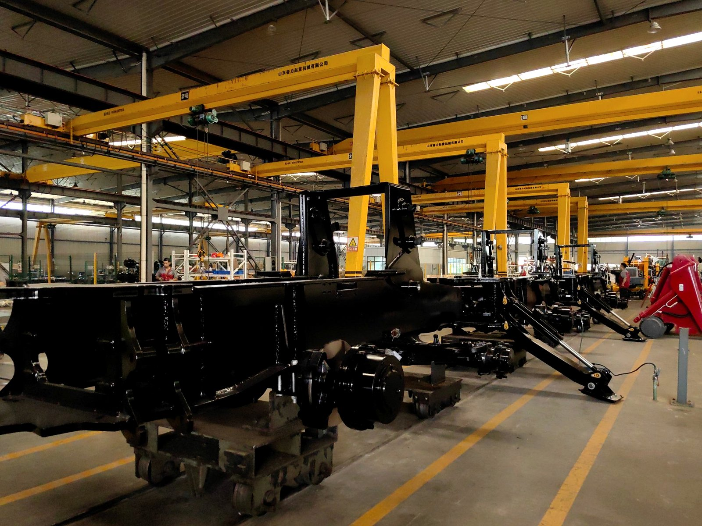

This is where I spend most of my days — standing inside a machine that is still being built. From this side, the mistakes that hurt a dealer stop being abstract. They arrive as a specification that can no longer be changed, a date that cannot be held, or a part that is not on the shelf.
Why Dealers Fail (It Is Almost Never the Selling)
Every dealer I have worked with could sell. They had the contacts, they knew their market, they had been in the business long enough to know who buys machines and who only talks about it. If selling ability were the deciding factor, most of the dealers who quietly stopped ordering would still be here.
What separates the ones who last is a different question: do they treat the dealership as a series of transactions, or as a business that has to still be standing in five years? A transaction looks like this — buy cheap, sell fast, take the margin, move on. A business looks like this — know who bought the last machine, know when it will need service, know what the next customer will ask, and have the answer ready before the question arrives.
Almost every mistake below is the same mistake wearing different clothes: choosing the transaction over the business.
Mistake One — Treating Discount as Your Strategy
The first email from a new dealer almost always contains the same sentence: please give us your best price. I understand why. Price feels like the one variable they can control, and a better price feels like a head start.
But a discount is the easiest thing to give and the hardest thing to earn back. If your whole advantage is that you bought a few percent cheaper than the dealer in the next city, then your business is one phone call away from disappearing, because he can make the same call to the same factory, or to a different one. Price is a position you occupy temporarily. It is not a business.
What actually decides whether a dealership makes money is the gap between what the machine costs you landed and what your market will pay for it — and that second number has almost nothing to do with me. It depends on how well you understand your customer: whether he is buying on price, on availability, or on the fact that you pick up the phone at nine at night when his machine is down. The dealers who win are usually not the ones with the lowest landed cost. They are the ones who stopped competing on the only line where every competitor can compete.
When a dealer asks me for a better price, the more useful conversation is the opposite question: what is stopping you from selling it at a better price?
If you are still comparing suppliers rather than prices, my guide to choosing a backhoe loader dealer or supplier covers what actually matters in that evaluation — and most of it is not on the price list.
Mistake Two — Signing a Target You Cannot Eat
This is the most expensive one, and it usually starts with something that feels like ambition. Every factory, including mine, offers better terms for volume: a lower price at a higher annual quantity, exclusivity against a commitment, priority in the production schedule for dealers who order ahead. On paper, it looks like good behaviour being rewarded.
Here is what it looks like six months later. The machines have arrived. Some of them are sold. The rest are standing in your yard, in the sun and the rain, losing a little value every month and holding the money you needed to pay for the next shipment. Machines are not inventory in the ordinary sense. They are expensive, they depreciate, and every unsold one is standing on money you do not have anymore.
The dealers who get into trouble are not lazy. They are optimistic, and they signed a number based on what they hoped to sell rather than what they had already sold. That gap is the expensive part. My honest advice: agree to a target you can still hit in a bad year, not one you can only hit in a good one. If you grow, we will renegotiate from strength. A dealer who orders again every quarter for five years is worth more to any real factory than one who buys a container once and never comes back.

Machines waiting in a yard look like progress. They are also money that has stopped moving — which is why the volume target you sign is a cash-flow decision, not a discount decision.
If you are offered a big discount for a big commitment, ask one question: where does the money come from if the machines do not sell? If you do not have a clear answer, the discount is not a discount. It is a loan, and the machine is the collateral.
Mistake Three — Selling the Machine and Forgetting the Support
A backhoe loader is not a phone. It is a machine that will need filters, seals, hoses, and eventually a technician. The first machine you sell a customer is a sale. The second machine is a relationship.
The pattern I see from the factory side goes like this. A dealer sells a machine. The machine works well. Everyone is happy. Then something small fails — a hose, a seal, a filter that nobody stocked. The customer calls. The dealer has no part on the shelf and no technician who has opened that model before. The order becomes an air-freight shipment, the customer waits, and the machine sits. By the time the part lands, the dealer has lost not one sale but every future sale that customer would have made — because in most of the markets we work in, everybody knows everybody, and a machine standing idle is the loudest advertisement a competitor could ask for.
Support is not an afterthought you add once you are big enough. It is the thing that makes you big enough. A small parts shelf, one trained technician, and the habit of answering the phone when a customer is in trouble will do more for your business than any discount we could discuss. Parts and service are also the two lines where you set the price, not the factory.
If you want to know what a sensible first stock actually looks like, I wrote a separate piece on the spare parts worth shipping with the machine. The principle is simple: the parts that stop work are almost always small and cheap, and the cheapest moment to ship them is inside the container that is already going.
Mistake Four — Never Training Your Own Technician
There is a version of this business where the dealer is a courier: the machine comes in, the machine goes out, and every technical question travels back to the factory. That version works fine until the first real problem, because distance, time zones, and language all work against you at exactly the moment your customer is angriest.
The dealers who build lasting territories do something that looks unglamorous: they send someone to the factory, or they invite our technician to their workshop, and they learn how the machine actually goes together. They learn to read a pressure gauge, to diagnose a hydraulic fault instead of guessing, to do a first service properly. That investment is small next to a container of machines, and it changes the conversation they have with their customers. A dealer who can say honestly, "I can fix that" sells differently from one who has to say, "let me ask the factory."
I will admit something that is also in our interest: a dealer who never opens a machine is a dealer we have to support on every small problem, which slows everything down for both of us. The strongest partnerships I have are with dealers who call me with a real diagnosis and a question about a specific part, not with a photo and a shrug. That is not a criticism. It is a description of what competence buys you.
Understanding the machine is the foundation of that competence — it is why I point people at the parts and systems guide before they worry about inventory lists.
Mistake Five — Letting Your Customer List Live in Your Head
This one sounds too simple to include, and it is the one that costs the most over time. I have asked dealers how many machines they have sold in the last two years and watched them count on their fingers — not because they do not know their business, but because the knowledge lives in the owner's memory and nowhere else.
That is fine while there are ten machines. At fifty it starts to leak, and the leak is always in the same place: the follow-up. The customer who bought two years ago and is now ready for a second machine, or ready to recommend you to his cousin, or quietly unhappy because nobody has called since the invoice. Nobody remembers to call him, because nobody wrote his name down.
It does not need software. A notebook is enough, if it is actually used. For every machine you sell, write down four things: the model, the customer's name and number, the date of delivery, and the hour meter reading. Add a note every time you service it or sell a part. Two years later, when you want to sell that customer his second machine, that page is the difference between a cold call and a conversation that opens with "how is the machine treating you?" The second one closes far more often, and it costs you nothing.
What the Good Dealers Do Differently
After enough orders, the pattern becomes obvious. The dealers who last are not the loudest, and they are not the cheapest. They tend to share a short list of habits:
- They ask what the machine will do, not just what it costs. One question — what will you be using it for? — tells me more about a dealer than any purchase order, because it means he is thinking about his customer's job rather than his own margin.
- They quote realistically. They give their customer a delivery date with room in it, and then they beat it. A promise you keep is worth more than a promise you make.
- They carry a small, sensible parts stock. Not a warehouse — the parts that stop work, plus one of the awkward items that take weeks to arrive.
- They invest in one good technician and treat that person as part of the business rather than a cost to be minimised.
- They tell me when something is wrong. The dealer who calls to say "this part failed and my customer is unhappy" gets a faster and more useful response than the one who says nothing and quietly loses faith in the brand.
- They order again, on time, without drama. The single best signal a dealer can send is a second order placed on schedule at the volume he committed to.
The Part of This That Is On Us
It would be dishonest to write all of this and pretend the failures always sit on your side of the table. Factories create dealer problems too, and I would rather name them than let you discover them the hard way.
We sometimes chase volume and reward the wrong behaviour — pushing a target that makes a dealer buy machines he cannot sell, then acting surprised when he does not come back. We sometimes treat a small dealer as unimportant until he becomes a competitor's dealer. We sometimes let a spare part sit in the warehouse for three weeks when we know perfectly well it should leave in three days. And we sometimes promise a delivery date the production schedule cannot actually keep.
I can only speak for the way I try to work. If a date is not real, I will not give it to you. If a part is not in stock, I will tell you the honest lead time instead of a comfortable one. If a configuration will not do what you need, I will say so before you order, even when that means a smaller invoice for me today. A relationship that starts with an honest limitation lasts longer than one that starts with a comfortable promise, and I have seen enough of both to be sure of it. If you want to test any of this, ask me for proof. I would rather be checked than trusted blindly.

The part of the job that happens on this side: machines being built on a real line. What a dealer does after they leave decides whether they ever come back for more.
The Point of All This
The five mistakes are really one mistake: choosing the fast transaction over the slow business. The discount, the oversized commitment, the missing parts shelf, the untrained technician, the customer whose name nobody wrote down — they are all ways of taking money out of next year to pay for this year.
The good news is that the fix is not expensive. It is mostly habits and honesty. Ask what the customer will do with the machine. Promise only what you can deliver. Keep a small stock of the parts that stop work. Train one person properly. Write down the names of the people who bought from you. None of that needs a bigger factory, a better price, or a luckier market. It needs the dealership to be treated as a business that has to still be standing in five years.
If you are weighing up whether to represent a brand — or you already sell machines and want to know where your weak points are — send me a message. I will give you a straight answer about what we can and cannot do, and I would rather tell you that now than have you find out from a customer.
Thinking About Representing a Backhoe Loader Brand?
Tell me your market, what you already sell, and what your customers ask you for. I will give you an honest assessment of whether our machines fit your territory — including the parts and service side, which is where most dealerships either win quietly or lose quietly.
Talk to Vivian on WhatsApp